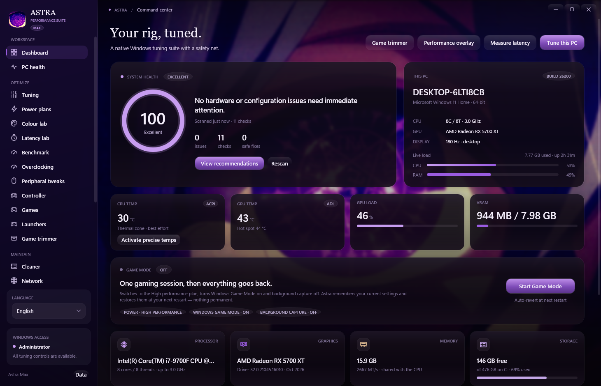
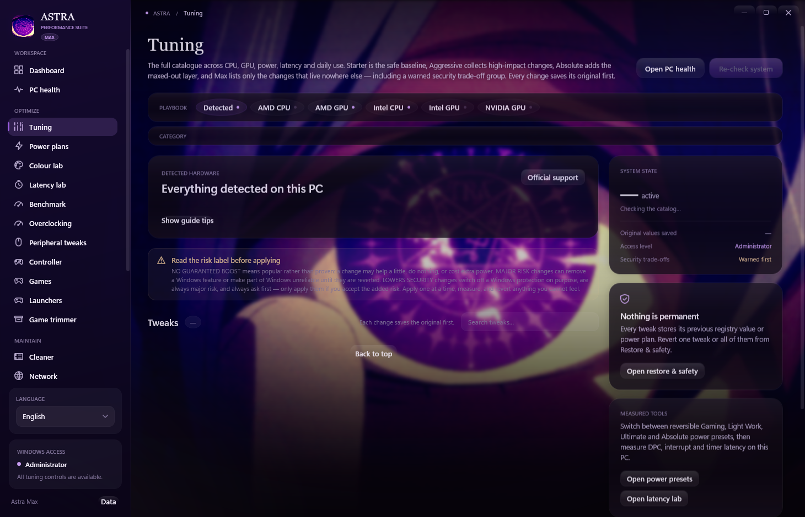
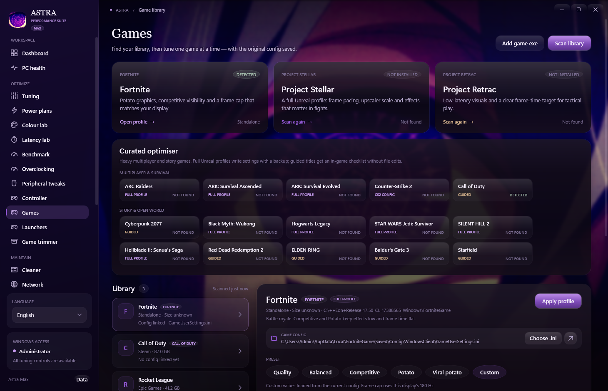
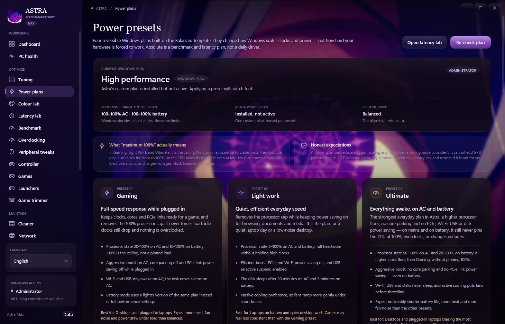
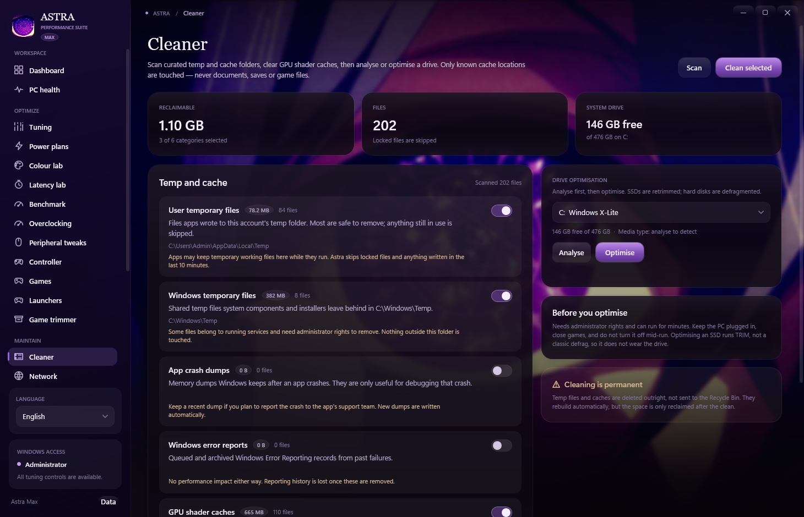
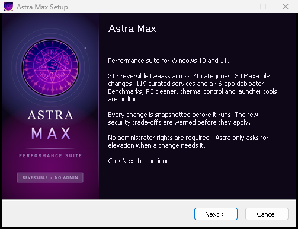
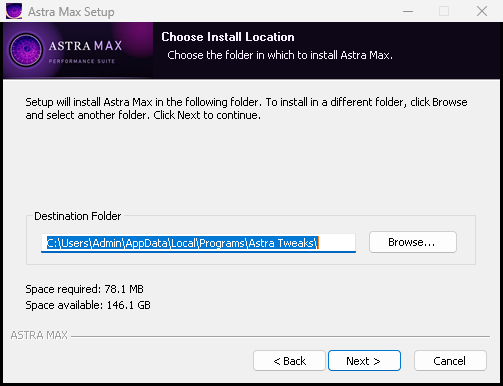
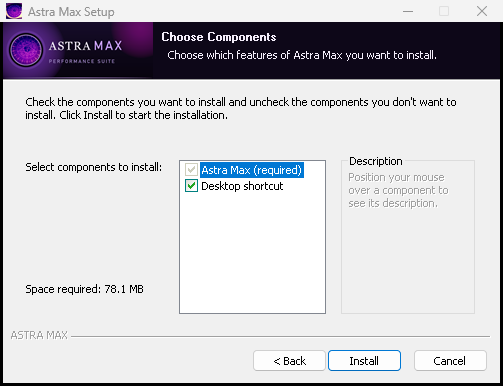

Health first, tweaks second
The dashboard scores the system, runs 11 health checks and shows live CPU and GPU temperatures, load and VRAM before you change anything.
AME Wizard Beta playbook · v1.4.1
Astra Max is a 36-page AME Wizard playbook plus the Astra performance app. The wizard prepares Windows; the app keeps 228 tweaks, power presets, game profiles and a cleaner in one place — with every change reversible.
9ABD6F8D22CA65D280A450BE63DDCDCEEB6DF2F7465E872D5B1022173F4722B5

The Astra app
Astra Max is the performance suite that ships with the playbook. It reads the machine first, shows a health score, and only applies what you pick — saving the original value before every change.
The dashboard scores the system, runs 11 health checks and shows live CPU and GPU temperatures, load and VRAM before you change anything.
CPU, GPU, power, latency, network, gaming, privacy, kernel and more. Filter by category or search by name; each row shows its current state.
Detected, AMD CPU, AMD GPU, Intel CPU, Intel GPU and NVIDIA GPU layers, plus Starter, Aggressive, Absolute and Max collections sized to your build.
Every tweak stores the previous registry value or power plan. Revert one row, a whole category or all of them from Restore & safety at any time.
A local benchmark scores CPU, memory and disk throughput, and the latency lab measures DPC, interrupt and timer latency on your PC instead of quoting a number.
One session: Astra switches to the High performance plan, turns Game Mode on and background capture off, then restores your settings at the next restart.
Screens
Real captures from the bundled Astra build, not mockups. Click through the app the playbook installs.




The wizard
AME Wizard applies the same documented options you can review before anything runs. The app is the control panel afterwards; the playbook is the install-time layout.
Remove-AppxPackage; switching a tier OFF later does not reinstall them.The Astra app and Astra Max Setup are unsigned. SmartScreen may warn on first launch; verify the archive hash and use the build from this site.
Astra Max Setup
The playbook launches Astra Max Setup silently. Run it yourself and you get the standard intro, destination and component pages.



Current build
One encrypted archive for AME Wizard Beta. Store it somewhere local, verify the hash, then load it into the wizard.
9ABD6F8D22CA65D280A450BE63DDCDCEEB6DF2F7465E872D5B1022173F4722B5
Get-FileHash .\Astra-1.4.1.apbx -Algorithm SHA256
Install path
Astra Max changes system components. Test on a disposable VM or a fresh image before using it on a daily driver.
Run the hash command above and compare all 64 characters with the value on this page. Do not continue on a mismatch.
Use a Windows 11 ISO on a VM or a freshly reset install. Existing customizations can collide with the playbook's option gating.
Open AME Wizard Beta, load the .apbx and enter malte. Review every page: preset, debloat tier, service tier, security choices.
Launch Astra from the shortcut, check the dashboard, then work through Tuning, Power presets and Games. Revert anything from Restore & safety.
Straight answers
Astra.exe and Astra Max Setup have no code-signing certificate. SmartScreen can warn, and some antivirus tools may flag a system-tweaking binary. The source and archive hash are public so you can verify before running.
No BattlEye or EAC bypass, no firmware or clock changes, and no promised FPS number. The app measures your PC and reports what it measured.
Defender and VBS options default to disabled and restoring them may require a manual re-enable. Read those pages; the hardening page is a separate, default-on decision.
Debloat tiers uninstall Appx packages. Turning a tier OFF later does not reinstall them. Service tiers may delete cache folders in addition to changing start types.
Temp files and caches cleaned by Astra are removed, not sent to the Recycle Bin. They rebuild automatically, but the space is only reclaimed after the clean.
Every screenshot shows Astra 1.6.4 running on Windows 11 hardware. Your detected CPU, GPU and game library will differ; the frames are real, the values are not a benchmark.